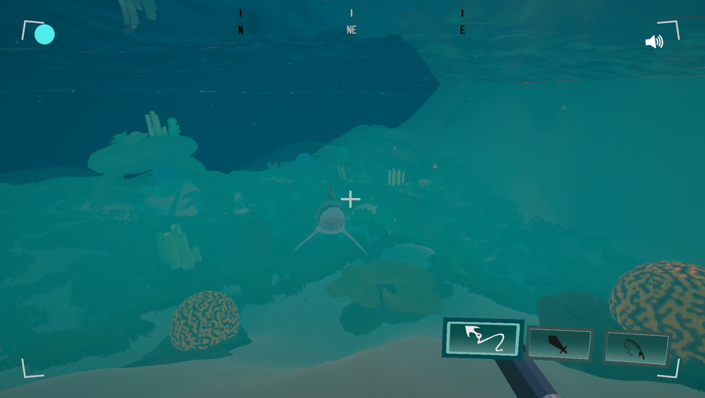

Fish n’ Ship
Un jeu d’aventure multijoueur de type friendslop, développé sur Unity en 2026.
Télécharger Fish n’ Ship (.zip)
Hébergé sur le site de Créajeux. Décompresse l’archive, puis lance l’exécutable.
Mon rôle
J’ai réalisé toute l’IA des ennemis, ainsi que le mouvement procédural des tentacules du kraken.
IA des ennemis : machine à états
Chaque ennemi fonctionne avec une machine à états : un seul état est actif à la fois, et des transitions le font passer à un autre en fonction de la situation. Cette approche garde le comportement lisible, facile à déboguer et simple à étendre quand on ajoute un nouveau type d’ennemi.
Tentacules du kraken : mouvement procédural
- Chaînes d’IK (cinématique inverse) : chaque tentacule est une chaîne de segments dont l’orientation est calculée pour atteindre une cible, sans animation préenregistrée.
- Damping : un amortissement lisse les mouvements pour obtenir un rendu organique et éviter les à-coups.
Le résultat est un mouvement qui réagit à la situation en temps réel au lieu de rejouer une animation fixe.
Captures

